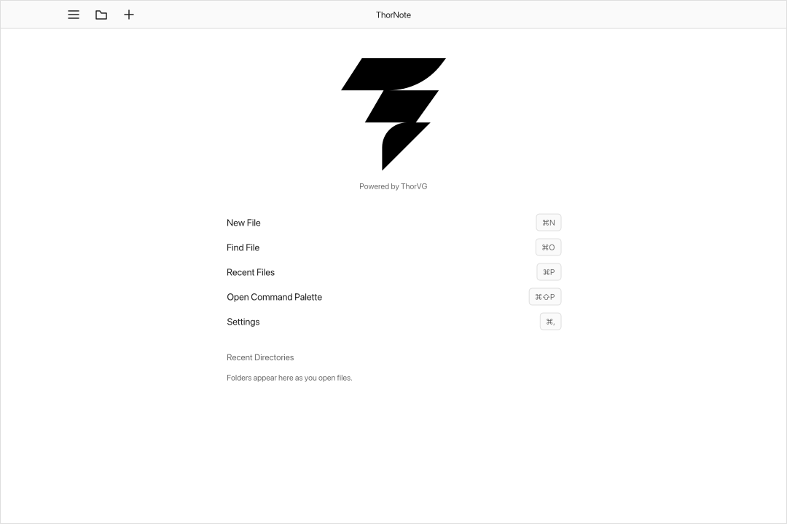

Note application powered by ThorVG
Every element of thor.note is rendered by ThorVG. Text editing and font handling, SVG and Lottie, and every other part of the interface are drawn as vectors, so it stays sharp at any size. The title bar, layouts and features are customized in Lua, aiming for an editor you can extend.

Starting the app
- Command paletteF1
- Recent filesCtrl P
- Find a fileCtrl O
- SaveCtrl S
- Document listCtrl B
- SettingsCtrl ,
- UndoCtrl Z
- RedoCtrl Shift Z
- Select allCtrl A
- CopyCtrl C
- CutCtrl X
- PasteCtrl V
- Larger textCtrl +
- Smaller textCtrl -
- Reset text sizeCtrl 0
Build
Set up, compile, run.
C++20 and Meson. Lua is fetched and built with the project.
Desktop
$ meson setup build $ meson compile -C build $ build/src/thornote/ThorNote notes/
Pass a folder to open it as a library, or files to open them in tabs.
WebAssembly
$ meson setup build/wasm \ --cross-file cross/wasm32.txt \ --buildtype=release \ -Dcpp_link_args="['-fwasm-exceptions', '-sSUPPORT_LONGJMP=wasm', '-sSINGLE_FILE']" $ meson compile -C build/wasm
Produces ThorNote.js with WebAssembly embedded by -sSINGLE_FILE, so it also opens straight from disk. Omit that flag to produce separate ThorNote.js and ThorNote.wasm files.
Desktop needs thorvg-1 ≥ 1.2 and sdl3 ≥ 3.2 installed. The WebAssembly build needs the Emscripten toolchain on the path and fetches ThorVG itself.